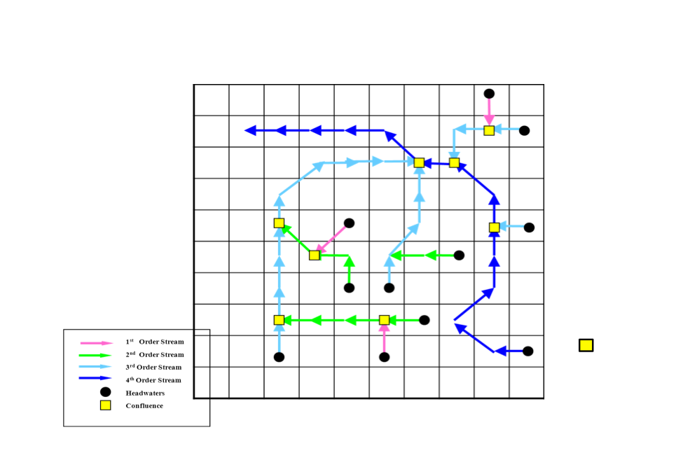

Steps to run RBM (Salmon River example)¶
The following describes the steps for simulating water temperature with the grid-based semi-Lagrangian model, RBM, assuming one has downloaded VIC 4.2.d and prepared all the necessary input files.
1. Download Source Code & Example Datasets¶
Download the source code for VIC_RBM2.2, please refer to Downloads/Code
Download the example data sets, please refer to Downloads/Datasets/Sample Dataset
After unzipping the example dataset Salmon_River_data, you can find the file：
The sub-directories within this directory are:
| Sub-directories | Description |
|---|---|
| RBM/Perl_Scripts | pre- and post-processing scripts written in Perl |
| RBM/src | the Fortran 90 source and Makefile that builds the executable. RBM and places it in the directory, ../Test_Case. Users may wish to change this by editing the makefile. |
| RBM/rout_DA | the source code and Makefile for the modified routing model, rout_RBM. |
| Salmon_River_data/Test_case | the input files and executable for running the example problem, using input data for the Salmon River basin at a gridded resolution of 1/2° lat/long. |
| Salmon_River_data/UH_output | the sample output from executing the routing model, rout, and the input data for the sample problem. |
| Salmon_River_data/VIC_forcing | the daily precipitation (mm), max/min air temperatures (°C), and wind speed (m/sec) that provides forcings for each VIC grid cell. |
| Salmon_River_data/run_VIC | the snowbands, soil, veg-param files, the world_veg_lib files and example global parameter files |
| Salmon_River_data/VIC_output | the meteorologic output files, full_data_lat_long, and the hydrologic output - files, flux_lat_long, from the VIC simulations. |
2. Create the RBM Executable¶
Navigate to the folder, RBM/src, and type:
This will create the executable, rbm10_VIC.
3. Run the Model¶
Step 1 Build the forcing function files (flow and meteorology)¶
In the example, we run hydrological model VIC4.2.d to generate flow and energy fluxes, which are input data for RBM. The example global parameter files can be found in the directory run_VIC. To create the necessary files (executable file to run VIC), you need to download VIC4.2.d. The instructions to generate the executable file vicNl and run VIC can be found here. The example global files to generate baseflow, surface runoff and heat fluxes are also included in the folder run_VIC and you need to specify the output directory in those two global parameter files before you use them. The two global files can be run as follows:
and
Note:
-
Again! The output directories need to be specified in each global parameter files, global_param_Salmon_0.5_flux and global_param_Salmon_0.5_full_data in this case.
-
How to use command line to run a model?
- The command line above is an abbreviate for full/path/to/executable/file -g full/path/to/global/parameter/file. If the global parameter files are located in the current directory, you can use the command line above. If not, you need to add the full path before each file.
- This rule is also applied in the following steps. If the script/executable/control/parameter files are not in the current directory, you need to add the full paths to them.
Step 2 Generate topology file¶
In the folder, ../Test_Case, run the perl script, build_network_beta.pl* (copied from ../Perl_Scripts) using the direction file. Example direction file *Salmon_flowd_0.5.dir can be found in ../Test_Case. In the flow direction file, all the grid cells surrounding the basin of interest must contain a negative one (-1). Also, we cannot simulate a river system containing braided networks. The following is the command for generating the topology file for the Salman example:
This script requires two input arguments in the command line: the path of the direction file Salmon_flowd_0.5.dir and the path of the output file Salmon_0.5.Topology.
Step 3 Prepare control file for generating network file¶
The user needs to prepare a control file in order to generate network file. Network file is an important input to run RBM. This control file (see Figure 2 for an example) contains all information that we need to generate network file. Details are described below:
{kind=link}
| Input | Note |
|---|---|
| Starting Date: | 8 digit number, format: YYYYMMDD |
| Ending Data: | 8 digit number, format: YYYYMMDD |
| Time Steps per Day: | This version of model simulates only daily averages, so this is always "1". |
| Input directory: | The directory containing input forcing data |
| Output directory: | Full path to the output directory |
| Topology File: | Specify the path/filename of topology file |
| Network File: | The Network File must have the suffix, _Network. |
| Flow File: | This is the name of the file that will be created by the routing program |
| Heat File: | This is the name of the file that will be created by the routing program |
| Mohseni Parameters: | When the characters, " grid" (note the space) are missing, constant values for the Mohseni parameters are obtained from a file with the same format as the example file, Salmon_Parameters. |
| Heat Dump: | FALSE if there is no advective heat source (Power Plants, for example) |
| Ndelta: | Usually "2", but can be larger, particularly in the case of slower streams |
The control file must have the suffix, .Control, and the colon (:) after the descriptive characters in each line is required.
An example control file is also included in the folder Test_case.
Note: The input/output directories need to be changed by user accordingly in the example control file.
Step 4 Generate network file¶
Run the Perl script build_input.pl, using the control file Salmon_0.5.Control generated in the previous step as input, to create the network file required by RBM (Salmon_0.5_Network in this example) and the routing location file required for the routing scheme (Rout.Cells.init and Rout.Cells). See Appendix A for a description of elements in the network file. Here again, the project name (Salmon_0.5) is required on the command line. The suffix, .Control, is appended by the Perl script:
Step 5 Prepare routing input files¶
Build the forcing function files for flow and heat budget using rout, the executable file for routing model.
Navigate to the folder, rout_DA, and run:
This will create the executable,
User needs to prepare a control file salmon.inp_DA (see Figure 3 for an example) to run the modified Lohmann routing model. The Name of station file specified in this control file should be set to the file Rout.Cells.init if this is the first time running the routing model, and to the file Rout.Cells if the routing model has already been run before using the same routing parameters. The input file (in this example, salmon.inp_DA) is similar to that described on the VIC model Web site with the exception of the addition the Leopold parameters. Most parameters in this control file are the same as the original Lohmann routing model, and see here for detailed instructions. (See 2 Creating a Hydrograph)
{kind=link}
Step 6 Run routing model¶
Run rout from the directory, Test_Case, using the file, salmon.inp_DA
creating the direct access files for flow and heat budget (Salmon_DA_flow and Salmon_DA_heat in the example). See Appendix A for a description of the variables in the flow and heat budget files.
Step 7 Run RBM¶
All necessary files have been created at this point (see Appendix A for a description of RBM output). Run the temperature model RBM with command line as follows:
where first Salmon_0.5* refers to Salmon_0.5_Network ("_Network" is appended by the model software) and second "Salmon_0.5" is the output file name (this refers to full_path/output_name. In this case, if no directory is addressed, the output file will be directly located in the current directory). "*Salmon_0.5.Spat" is also created and is a file that cross-references element numbers in the output file "Salmon_0.5.Temp" to lat/long for post-processing.
APPENDIX A: RBM I/O instruction¶
Notation:¶
Reach: stream reaches can include several cells
Cell: a cell is a grid cell.
Cell path: each reach is first divided into parts, which we call cell path here, based on cells; for each reach, if it covers "ncell" number of cells, then it has (ncell - 1) number of cell paths
Node: A cell can have one or more nodes. If a cell is not a confluence, then it has one node; if a cell is a confluence cell, then this cell has more than one node, depending on how many tributaries converge at this cell. Cell paths are the channel parts that are between two adjacent nodes.
Segment: a cell path is further divided into multiple segments (default is that each river cell is divided into two segments). Segment points: the division points of segments. Note that the most upstream segment point would be the upstream edge of the headwater cell.
Example:¶
Some variables below are explained using the topology of the Salmon example:
Network file (input):¶
Line 1: not read
Line 2: directory of flow file
Line 3: directory of heat file
Line 4: <start_date> <end_date>
date format is "YYYYMMDD". Extra arguments will not be read.
Line 5: <nreach> <flow_cells> <heat_cells> <source>
<nreach>: number of reaches. A reach (Figure 1) is comprised of segments from the headwaters (circles) to the confluence with the next longest reach (squares).
In Figure 1, a 1st order reach is the color, magenta, a 2nd order reach is the color, chartreuse, and the longest (main stem) reach is the color, blue.
Note that the term, “order”, is not the same as the term used in the Strahler classification of stream order. In the example from the Salmon River, nreach = 7.
<flow_cells>: number of total cell paths. In the example, flow_cells = 19.
<heat_cells>: number of nodes. For non-confluence cells, each cell has one node. For confluence cells, one cell has more than one nodes (depending on how many tributaries it has).
<source>: whether there are point source inputs. TRUE for yes, FALSE for no.
(Line 6: <souce_file>)
If <source>=TRUE, this line is the path of point source file.
For each reach:
Line 1: <no_cells> Headwaters <head_name> TribCell <trib_cell> Headwaters <main_stem> R.M. = <rmile0>
<no_cells>: number of nodes in the reach (at least 2)
<head_name>: the headwater number. Since one headwater corresponds to one reach, headwater number is also the indicator of reach number.
<trib_cell>: the node number in the next higher order reach where the current reach enters into. If the current reach is the highest order reach, then <trib_cell> is equal to the node number of the outlet node.
<main_stem>: the headwater number (thus also the reach number) of the next higher order reach it enters. If the current reach is the highest order reach, then <main_stem> is equal to 0.
<rmile0>: length of the reach + length of one extra grid cell upstream of the headwater cell.
Line 2: <alphaMu> <beta> <gamma> <mu> <smooth_param>
Mohseni parameters for this reach (alphaMu is 'alpha - mu')
For each cell in the reach (number of loops = <no_cells>):
Line 1: Node <node> Row <row> Column <col> Lat <lat> Long <lon> R.M. = <rmile1> <ndelta>
<node>: node number of this node in this reach (note that the same cell can have multiple nodes if it is a confluence cell)
<row>: row number of the node
<col>: column number of the node
<lat>: lat of the node
<lon>: lon of the node
<rmile1>: river length (in miles) between this node and the most downstream node of this reach (so if the current node is the most downstream node, its <rmile1> would be 0)
<ndelta>: number of segments of this cell in this reach (each cell reach is further diveded into <ndelta> number of segments for calculation); default: 2.
Flow file (input):¶
For each time step (currently daily):
For each reach:
for each cell in this reach (except the most downstream node):
Line: <nnd> <ncell> <Q_in> <Q_out> <Q_diff> <depth> <width>
<nnd>: index of time step (currently daily, i.e., 1, 2, ..., last day)
<ncell>: node number (must be in order, and must skip the last node in each reach)
<Q_in>: inflow discharge of the node [cfs]
<Q_out>: outflow discharge of the node [cfs]
<Q_diff>: lateral flow directly from land surface [cfs] (usually 0 if flow is already routed)
depth>: flow depth [ft]
<width>: channel width [ft] (not used)
<u>: flow velocity [ft/s]
Note: Changing line is not necessary
Heat file (input):¶
For each time step (currently daily):
For each reach:
for each cell in this reach (including the last cell also):
Line: <ncell> <dbt> <ea> <Q_ns> <Q_na> <rho> <press> <wind>
<ncell>: node number (must be in order)
<dbt>: air temperature [degC]
<ea>: air vapor pressure at surface [mb]
<Q_ns>: net incoming shortwave radiation [Kcal/sec/meter**2] (see modified routing model instruction for details in units)
<Q_na>: net incoming longwave radiation [Kcal/sec/meter**2] (see modified routing model instruction for details in units)
<rho>: air density [kg/m3] (not used)
Output file (*.Spat):¶
For each divided stream segment:
Line: <reach_ind> <cell_ind> <row> <col> <lat> <lon> <delta_ind>
<reach_ind>: index of reach (i.e., which reach it is)
<cell_ind>: index of node (i.e., which node in this reach it is)
<row>: row number of the cell
<col>: column number of the cell
<lat>: lat of the cell
<lon>: lon of the cell
<delta_ind>: index of the divided segment point (i.e., which segment point in this cell and this reach it is).
Note that the first segment point in the cell would be the upstream edge of the cell; the last segment
point would be the last segment point upstream from the downstream edge of the cell (but not the
downstream edge). For example, if using the default segment number = 2 for each cell, the first segment
point would be the upstream edge of the cell; the second segment point would be the middle point of the cell.
Output file (*.Temp):¶
For each node:
Line: <time> <nd> <nr> <ncell> <ns> <T_0> <T_head> <dbt>
<time>: decimal year
<nd>: day of year
<nr>: reach index
<ncell>: node index in this reach
<ns>: segment index in this reach (note that it is index in this reach, but not just in this cell)
<T_0>: stream temperature
<T_head>: headwater temperature (should be the same for a certain reach)
<dbt>: air temperature (should be the same for the nodes which are in the same cell)
Figures¶
